Токио · Нагата-тё · праздник
Санно мацури: шествие в придворных одеждах среди небоскрёбов Токио
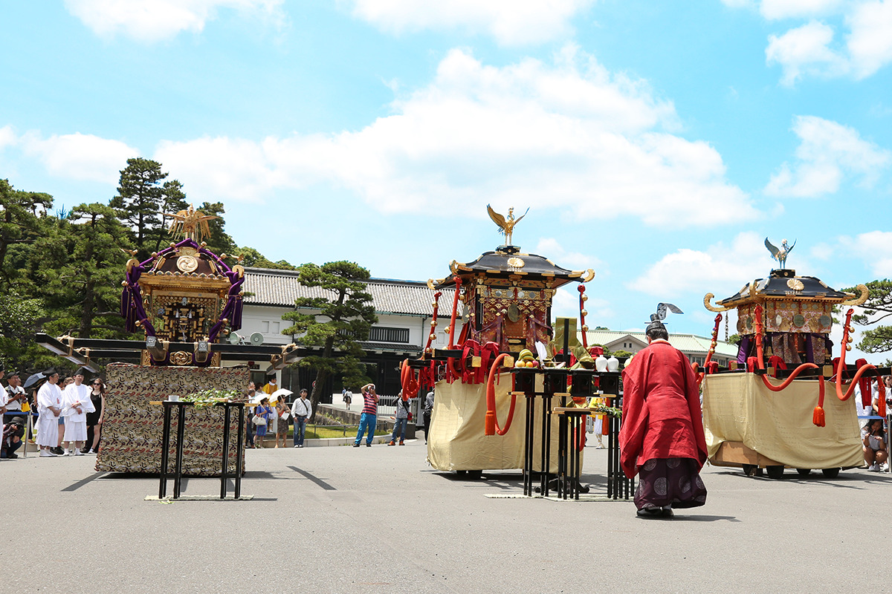
Раз в два года в середине июня по центру Токио идёт процессия в одеждах древнего двора. Праздник Санно святилища Хиэ считается одним из трёх великих праздников Эдо и одним из трёх великих праздников Японии, а когда-то его шествие входило даже в замок сёгуна.
Праздник
Эдо посреди делового Токио
Праздники издавна вплетены в жизнь японцев, и по ним хорошо видно, чем живёт тот или иной край. На многие из них могут прийти и путешественники: увидеть то же, что видят местные жители, и заодно узнать кое-что об истории и культуре страны. Поездка ради праздника даёт впечатления, которых не получить в обычном путешествии.
Больше всего праздников в Японии с начала лета до осени. В начале лета просят, чтобы жаркие месяцы прошли благополучно. В дни Обона утешают души предков, которые на время возвращаются в мир живых. Осенью благодарят за урожай.
Святилище Хиэ стоит в Нагата-тё, правительственном квартале Токио, и раз в два года, в середине июня, проводит праздник Санно. Его называют одним из трёх великих праздников Эдо, а вместе с праздником Гион в Киото и праздником Тэндзин в Осаке и одним из трёх великих праздников Японии.
По преданию, святилище основали люди, которые осваивали равнину Мусасино: они почитали здесь бога Санно как хранителя Эдо. Позже Докан Ота (1432–1486), военачальник, построивший первый замок Эдо, пригласил сюда божество из святилища Санно в Кавагоэ, чтобы оно оберегало город. В 1590 году в Эдо вошёл Иэясу Токугава (1543–1616), основатель сёгуната Токугава. Он обрадовался, что в замке уже есть святилище Хиэ, и сделал его хранителем замка. Простые горожане тоже почитали его как главное божество всего Эдо.
История
Праздник, который смотрел сёгун
Праздник Санно состоит из двух шествий: паланкинов и праздничных повозок «даси». Повозки выставляют больше 160 приходских кварталов святилища, по одному или вместе. В эпоху Эдо число повозок ограничили до 45, но за ними шли танцевальные помосты и ряженые, кварталы старались перещеголять друг друга, и процессия получалась очень длинной. Приходских кварталов было много, путь шествия охватывал большую часть города, и зрители могли любоваться им в самых разных местах.
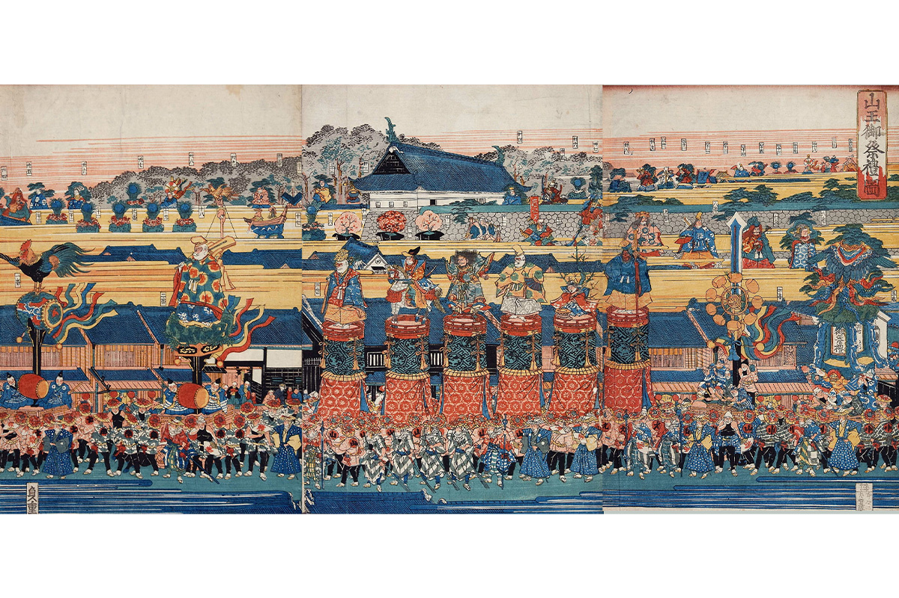
Праздником наслаждались не только горожане. Со времён третьего сёгуна Иэмицу Токугавы (1604–1651), внука Иэясу, шествию разрешили входить в замок, и смотреть его могли сам сёгун и все обитатели замка. Для женщин внутренних покоев Ооку, которые почти никогда не выходили за стены, праздник Санно наверняка был редкой возможностью почувствовать шумную жизнь города. С годами праздник становился всё пышнее, и власти не раз требовали от кварталов не тратиться на роскошь.
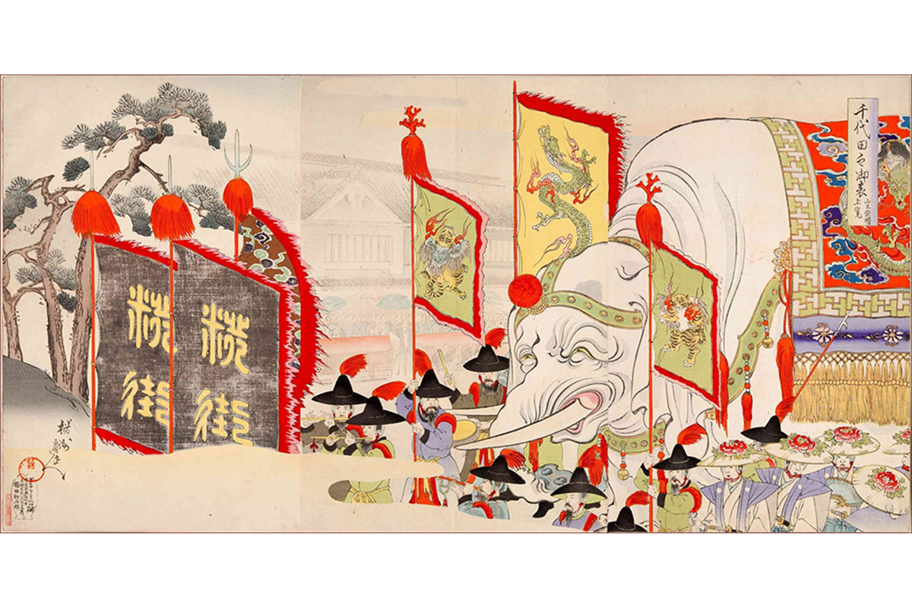
После реставрации Мэйдзи город изменился: улицы Токио опутали провода, и повозкам стало трудно проходить. Многие из них сгорели во время Великого землетрясения Канто 1923 года и во время войны. Часть повозок разошлась по другим краям, и на праздниках тех мест их возят по улицам до сих пор.
Главный праздник «Синко-сай» проходит раз в два года. Два паланкина «хорэн», один паланкин-микоси и шесть повозок «даси» обходят приходские кварталы, включая Гиндзу и Яэсу. Люди в одеждах древнего императорского двора идут между высотными зданиями, и это зрелище, где прошлое и настоящее как будто сходятся в одном месте. Посмотреть на шествие, похожее на праздник эпохи Эдо, приезжают гости со всей Японии и из-за границы.
Шествие
Паланкины и повозки
В эпоху Эдо праздник Санно называли «праздником Поднебесной», и по улицам шли паланкины и повозки. Повозка «даси» это передвижное место пребывания божества: её украшают горой, алебардой, куклами, цветами, и тянут её быки или несут люди. Тогда по городу проходило 45 повозок, и процессия, казалось, заполняла весь Эдо. После реставрации Мэйдзи по разным причинам главным стало шествие паланкинов.
Одна из главных радостей праздника в том, как разнообразны паланкины и повозки. В паланкинах несут главное божество и божеств, которых почитают вместе с ним, а повозки украшают птицами, обезьянами, другими животными, прекрасными юношами и цветами.
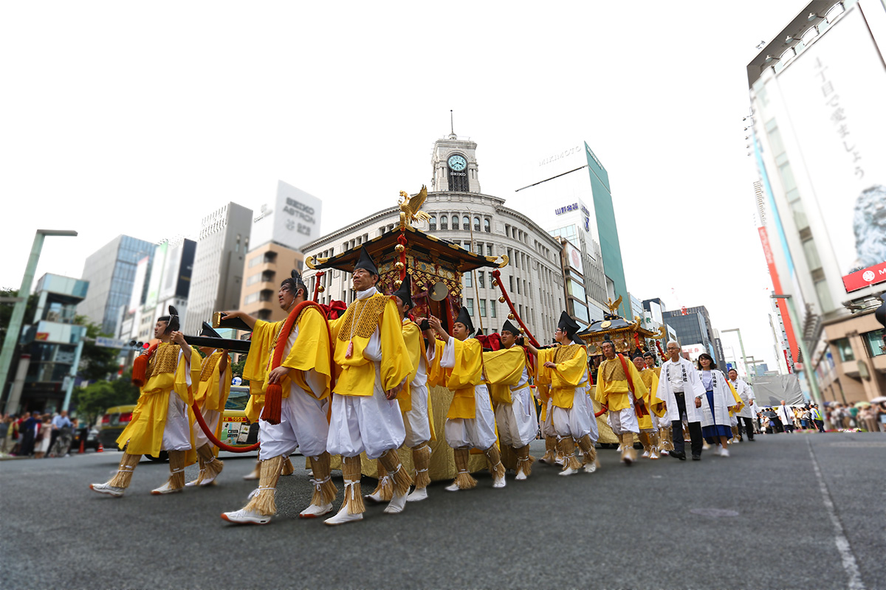
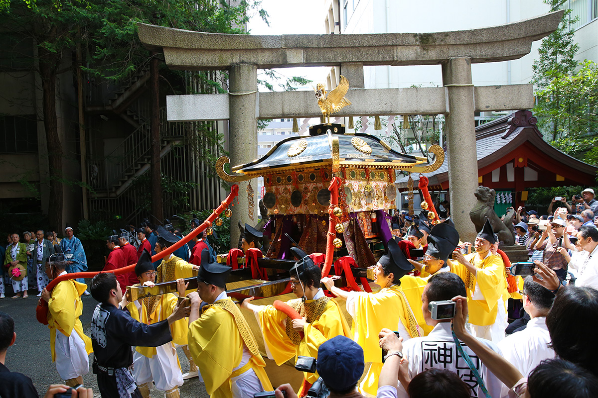
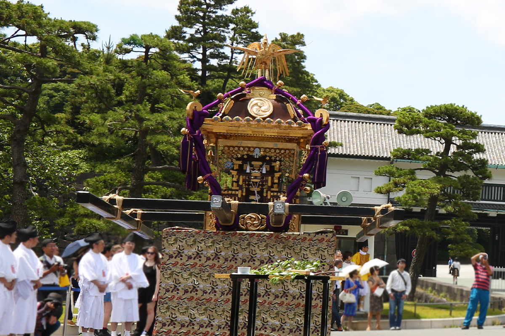
Шествие возглавляет повозка «Канкодори», петух на барабане. За ней стоит древнекитайская история. Император Яо, один из пяти легендарных правителей Китая, поставил у ворот дворца барабан: пусть бьёт в него всякий, кто недоволен правлением. Но правил он так хорошо, что бить никому не пришлось, барабан порос мхом, и на нём устроился петух. С тех пор такой барабан с петухом считают знаком мира и спокойствия в стране.
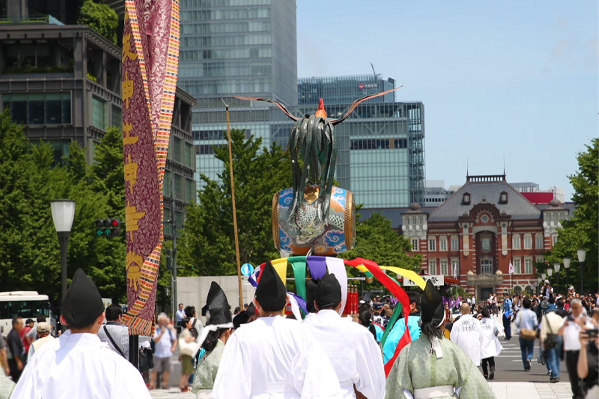
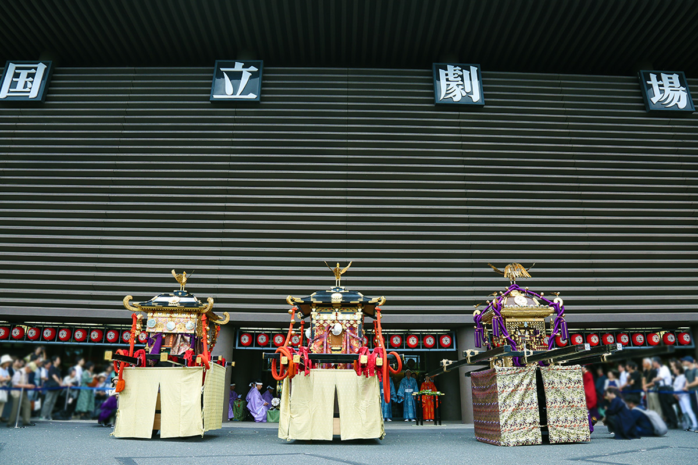
Святилище
Огни, танцы и сладости
Святилище Хиэ живёт праздниками и помимо большого шествия. В дни летнего праздника прохлады во дворе устраивают танцы бон-одори. Двор, обычно тихий, сплошь увешан фонарями, принесёнными в дар святилищу, и в их свете гремят барабаны. Движения в танцах большей частью простые, так что присоединиться может и новичок.
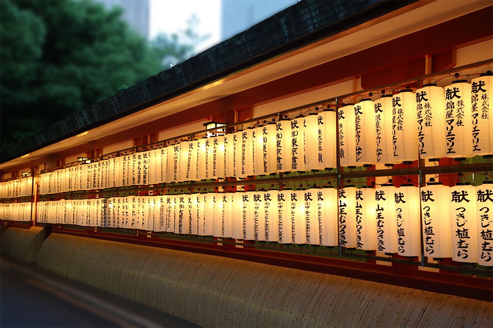
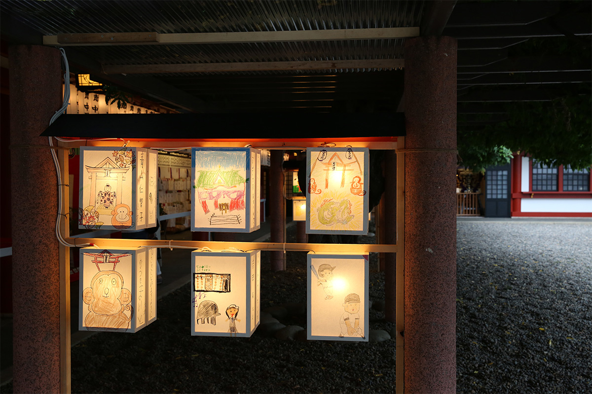
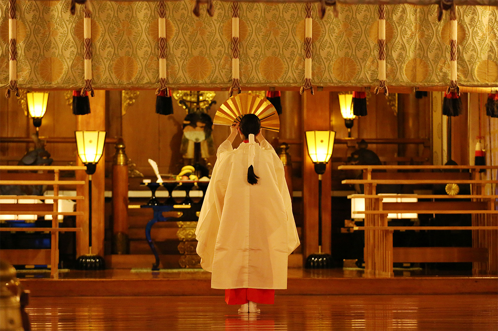
16 июня, под конец праздника Санно, проходит «Санно касё-сай», праздник японских сладостей. Он ведёт начало от 848 года: император Ниммё (810–850) по велению божества 16 июня поднёс богам шестнадцать сладостей, помолился об избавлении от поветрия и сменил девиз правления на «Касё».
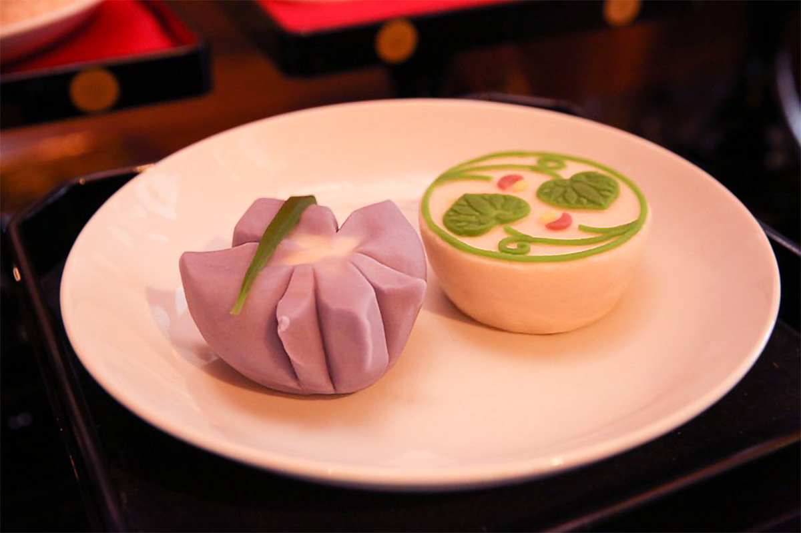
В 2026 году праздник Санно шёл с 7 по 17 июня, и это был год большого шествия. «Синко-сай» прошёл 12 июня: процессия вышла из святилища в 8:00 и вернулась к 18:00. Следующий большой праздник с шествием ждут в 2028 году.
Праздник Санно, святилище Хиэ
- Даты
- раз в два года, в середине июня (в 2026 году 7–17 июня)
- Адрес
- Токио, Тиёда, Нагата-тё, 2-10-5
- Телефон
- +81 3-3581-2471
- Сайт
- hiejinja.net